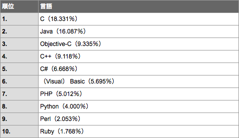
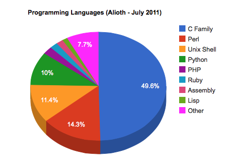

情報処理応用 ー Robocar Programming
C言語--姿と形
- 歴史がある。ほぼ５０才。C よりも古い言語は LISP と FORTRAN くらい。
- 歴史を生き延びた理由は?
- Linux/Windows/MacOSX などのオペレーティングシステム、アプリケーションのプログラムに適する(数値処理は本来は苦手)。
- 現在でも人気を保っている。


- コンピュータのメモリやデバイスの状態を頭に入れながらプログラミングする
低レベル言語。
- 手続き型。
- ソースコードをテキストで書き、機械語にコンパイルする。
ソースコードに文法上の間違いがひとつでもあるとコンパイルは失敗する。
- プログラムは関数の集まり。
- 関数は文の集まり。
- 文はセミコロンで終端する。
- 文は基本的に左から右、上から下へ実行される。
- 文には変数の型を定義する定義文、
変数を足したり引いたり、
関数に渡して戻り値を計算したり、
計算の結果を変数に代入する
実行文
の二つに分類できる。
- すべての実行文(式)は値を持つ。
- 値 0 を偽、0 以外の値を真と解釈する。
- 関数は決まった型、決まった数の引数を取り、決まった型の戻り値を返す。
- 変数はすべてコンパイルするときに型が決まっている必要がある、
静的型付け言語。
- 関数定義を入れ子にできない。関数呼び出しと混同しないこと。
- 豊富なライブラリ。
みんなが苦手なもの
- ; の役目の理解。
- { } の役目の理解。
- ( ) や { } のバランスを取ること。ウソだろ、おい。
- 関数の引数の理解。
- 関数の戻り値の理解。
- 「式は値を持つ」という言葉の理解。
- 真とか偽とか、なにそれ?
- 機械の気持ちで考えること。
|
back
|
prev
|
next
|